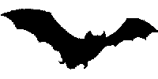
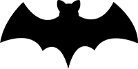

A Jász-Nagykun-Szolnok Megyei Kormányhivatal a Szolnokon élő denevérfajok védelmére programot indít. A program célja ismeretterjesztés, szemléletformálás, védett állatok egyedeinek és élőhelyének megóvása.
Több állatfaj - köztük számos denevérfaj - elfogadta az ember jelenlétét, alkalmazkodott az épített környezet adta lehetőségekhez és költő-, szapororodó-, táplálkozási helyül veszi igénybe az ember alkotta élőhelyet. Ma már a devevérek sem csak odvas fákban, üregekben, barlangokban fordulnak elő, hanem templomtornyokban, padlásokon vagy akár panelházak szigetelésében is.
Több ezer példány él városunkban is, mégis kevés információval rendelkezünk róluk.
A denevérek emlősök és az egész bolygón jelen vannak. Az emlősállatok egyedüli csoportja, amely aktív repülésre képes. A denevérek között vannak növényevők, amelyek gyümölcsökkel és virágporral táplálkoznak, halevők, de többségük rovarevő. Európa valamennyi denevére hosszabb-rövidebb téli álmot alszik, amelynek időtartama a külső hőmérséklettől függ. Enyhe teleken az alvás csupán néhány hétre korlátozódhat. A délen élő denevérek az eltérő éghajlaton rövidebb ideig alszanak, mint a hidegebb tájakon lakók.
A hazai denevérek elsősorban a téli szállás iránt támasztanak igényeket: fontos, hogy itt óvva legyenek a fénytől, az erős hőmérséklet-ingadozásoktól, és a levegő páratartalma is elég magas legyen, hogy a denevérek a téli álom idején ne száradjanak ki. Testhőmérsékletük teleléskor, valamint a nyári hidegfrontok során jelentősen lecsökken. A legtöbb denevérfaj társasan él, csak néhányuk pihen magányosan. Az európai denevérállományok nagy része erősen csökken. Ennek legfőbb oka a rovartáplálék, a zsákmányállatokból a szervezetükben felgyülemlő, emberi eredetű szennyeződések, valamint a téli szállás, a kölykezőhelyek és a nyári szállások megfogyatkozása. Hazánkban a panelprogram keretében új szigetelést kapnak az épületek, ami az energiafogyasztás szempontjából jelentős megtakarítást eredményez, azonban a házak szerkezetében, hasadékaiban eddig megbúvó denevérek kiszorulnak élőhelyükről, ami a védelmükre szervezett program egyik legfőbb indoka.
Mivel a repüléshez rengeteg energia szükséges, naponta testtömegük közel felét is elfogyasztják rovarokból a denevérek. A szolnoki állomány rovarfogyasztása éves szinten tonnákban mérhető, melyből a számunkra igen kellemetlen szúnyogok nagy arányban szerepelnek.
A Magyarországon előforduló 28 fajból 20 a Kisköre-Tiszaug között elhelyezkedő Közép-Tiszai Tájvédelmi Körzetben igazoltan előfordul. Szolnokon 15 faj jelenléte valószínűsíthető. A legnagyobb példányszámban a következő fajok fordulnak elő városunkban:
Hazánkban valamennyi denevérfaj védett.
A program megvalósításának első lépéseként 200 db faodú gyártásával és kihelyezésével próbálkozunk. Az odúkat – már a gyártás folyamatába is bevonva a diákokat – a Szolnoki Műszaki Szakképzési Centrum Petőfi Sándor Építészeti és Faipari Szakgimnáziuma és Szakközépiskolája gyártja le és szereli össze. Ezzel párhuzamosan ismeretterjesztő előadásokat, bemutatókat tervezünk. Az odúk átadása térítésmentesen történik a diákok, iskolák részére. Cserébe annyit kérünk, hogy az odúk kihelyezését dokumentálják, e-mailen küldjenek fotót róla, illetve gondoskodjanak az odúk minimális karbantartásáról. Ezen túlmenően, a program részeként, egy internetes oldalt hoztunk létre (amit olvas jelenleg honlapunk látogatója), melyen a denevérekről szóló tájékoztatás, az odú kihelyezéséről szóló ismeretek érhetőek el, illetve a kihelyezések nyomon követése fog történni a megküldött felvételek révén.
A denevérek mindennapjaink részei. Naponta rovarok milliót pusztítják városunkban. Tökéletes rovar, elsősorban szúnyogpusztítók. Nélkülük kevésbé lenne élhető Szolnok, s mi, lakosok is szegényebbek lennénk egy hasznos, szeretetre, megóvásra méltó, törékeny emlőssel.
A kölcsönösen hasznos, békés egymás mellett élés érdekében kérem, hogy támogassa programunkat. Látogassa honlapunkat, vegyen részt előadásainkon, akcióinkban, kísérje figyelemmel az odúk és a denevérek sorsát!
Tisztelettel: Dr. Nemes Gábor, Jász-Nagykun-Szolnok Megyei Kormányhivatal Szolnoki Járási Hivatal Környezetvédelmi és Természetvédelmi Főosztály vezetője
„… a’ Fetske Istentöl egyik végre erre rendeltetett, hogy az Aert a’ nappali legyektöl ’s bograktól tisztogassa: Azonképen a’ Denevér-is azon Isten parantsolatjából éjjel a’ Fetskének tisztit tselekeszi, és ö-is az éjjeli szúnyogokat hasonlóképpen öli s fogyatja.”
A denevérek az egész Földön elterjedtek, csak az állandó hó birodalmából és a nyílt óceánok területéről hiányoznak. Népes rend a denevéreké, hiszen több mint ezer fajuk él a bolygónkon, így elmondhatjuk, hogy minden negyedik emlősfaj denevér. Az emlősök között páratlan az a tulajdonságuk, hogy önálló aktív repülésre képesek. Ezt elsősorban a csodálatos módon kifejlődött bőrszárnyuknak köszönhetik, mely vitorla a kéz ujjai között, a mellső és hátsó végtagok között, sőt a lábak és a farok között is feszül. A legtöbb denevérfaj a trópusokon él, ahol nagyon változatos módon táplálkoznak. Vannak virágnektárt nyalogató, gyümölcsevő, rovarevő, sőt ragadozó denevérek is. Utóbbiak főleg kisebb békákra, gyíkokra, kisemlősökre vagy halakra vadásznak. A hazánkban élő 28 faj kizárólag rovarevő. Rovarfogyasztásukkal nagy hasznunkra vannak, hiszen ahol sok denevér él, ott nem kell tartani attól, hogy egyes rovarfajok túlszaporodnak, s ezzel nagy kárt okoznának a növényi kultúrákban. A legapróbb denevérek a csípőszúnyogokat is nagy mennyiségben fogyasztják, így a szúnyog elleni védekezésben a denevérek nagy hasznunkra vannak.
A denevérnek több magyar elnevezése is létezik. Erdélyben találóan szárnyasegérnek nevezik, hiszen valóban olyan, mintha egy egérke angyali szárnyakkal rendelkezne. Hasonló a bőregér elnevezés is, amelyet szintén gyakran használunk. Hazánkban két családja van a bőregereknek, vagyis megkülönböztetünk patkósorrú denevéreket és a simaorrú denevéreket. A patkósorrúaknak lópatkó formájú orrfüggeléke van, s ez segíti őket abban, hogy az orrukon keresztül kibocsájtott ultrahangjukat a megfelelő irányba sugározzák. A simaorrú denevérek a nyitott szájukon keresztül adják ki a tájékozódásra alkalmas ultrahangokat. A denevér egyébként lát a szemével, de a legpontosabb tájékozódó rendszere az ultrahang érzékelés. Az állatvilágban az evolúció során egyedülálló módon a legprecízebbre fejlesztették ki ultrahangos érzékelésüket, mely nemcsak az éjszaka idején, de a teljesen vak sötét barlangokban is tévedhetetlen tájékozódó képességet kölcsönöz számukra. A denevérek a saját maguk által kisugárzott hangimpulzusok a tárgyakról és az élőlényekről visszaverődő visszhangját figyelik, s ezekből a jelekből építi fel agyuk az éjszakai környezet képét.
Hazánkban a bőregerek téli álmot alszanak, hiszen a hidegben a rovarvilág is nyugalomba szenderül, s így a denevéreknek nem jut elegendő táplálék. Téli álmukat barlangokban, csöndes pincékben, kéményzugokban, falak hasadékaiban, faodvakban vagy kéregrepedésekben alusszák. Amint megjön a tavasz, újra aktívak lesznek, s fokozatosan foglalják el a nyári tanyahelyeiket, melyek lehetnek templomok tornyaiban, nagy sötét padlásokon, pincékben, lakatlan házakban, faodvakban, fák és építmények üregeiben és repedéseiben, esetleg barlangokban vagy művelésből felhagyott bányavágatokban. Május-június hónapban születnek meg a kölykök, melyeket a denevérek általában kolóniákban nevelnek föl. A nagy csoportok biztonságot nyújtanak, ahol a nőstények gyakran segítik is egymást.
Hazánkban minden denevérfaj védett. Erre elsősorban azért van szükség, mert egyrészt nagyon hasznosak, másrészt az ember által igen kiszolgáltatott és némileg veszélyeztetett helyzetben vannak. Ha nem figyelnénk rájuk, akkor a búvóhelyeik sorra megszűnnének, ami a kolóniák eltűnéséhez, s akár a fajok kipusztulásához vezetne. Nagyon sok denevér él a közvetlen környezetünkben is, még ha ezt nem is vesszük mindig észre. Mivel éjszakai állatok, s nesztelenül röpülnek, ezért csak kevesen figyelnek fel rájuk. Denevérek ezrei élnek az emeletes házak falainak repedéseiben is. A panelszigetelési program kapcsán ezek a nyílások bezárulnak, így ezeket a búvóhelyeket valamiképpen pótolni szükséges. A szolnoki denevérvédelmi program kapcsán éppen ezért a diákok segítségével mesterséges denevérodvakat helyezünk ki szerte a városban, hogy ne tűnjenek el nyomtalanul ezek a hasznos állatok a környezetünkből.
„A mi éghajlatunk denevérei nemcsak hogy nem kártékonyak, de még kellemetlenné sem válnak soha és ha ennek daczára is folytonos üldöztetés az osztályrészük, annak csak a babona és a sötét tudatlanság az oka. A nép azt hiszi, hogy a denevér az ember hajába kapaszkodik, hogy az alvó ember s állat vérét iszsza, hogy a mely tehénre rászáll, annak véres lesz a teje, hogy megdézsmálja a kéménybe akasztott sódart és szalonnát s mindezen mesék alapján felháborító kegyetlenséggel szögezi ki a kútra, vagy a kapura. A denevérek sokkal hasznosabbak, mint a rovarevő madarak : ezeket bölcs törvény védi, a denevérek azonban a tudatlanság közprédájára vannak bocsátva, holott jól felfogott érdekeink nagyon is kívánatossá tennék, hogy a törvény oltalma reájuk is kiterjesztessék.”
Odútelepítési programunk alkalmával 2 féle denevérodú típust készítünk, egy kisebbet és egy nagyobbat. Mindkét típust kedvelik a bőregerek, de a nagyobbik úgy van kialakítva, hogy az akár a kis állatok telelésére is alkalmas. Az odúkat a Szolnoki Műszaki Szakképzési Centrum Petőfi Sándor Építészeti és Faipari Szakgimnáziuma és Szakközépiskolájának diákjai készítették el. Köszönjük lelkesedésüket és fáradozásukat!
Mindkét odú műszaki rajzát is rövidesen feltesszük majd a honlapunkra, hogyha valaki otthon szeretne magának denevérodút barkácsolni, a pontos méreteket és az összeszerelés módját megtudhassa.
{kind=link}
{kind=link}
{kind=link}
{kind=link}